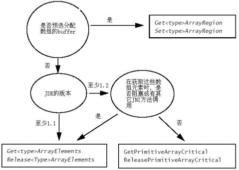

Java语言中的数组一般有两种，基本数据类型的数组和引用类型的数组。同样在JNI中也有此两种类型的数组，他们的操作方法是不完全一样的。以下是JNI数组的基本步骤。
java中基本数据类型一般就是byte、short、int、long、float、double、char、boolean等8种基本数据类型，基本数据类型的数组就是这些基本数据类型的一维数组！如：
byte[] barray boolean[] bolarray float[] farray int[] iarray
以下是一个基本数据类型数组的例子：
public class IntArray{
private native int operate(int[] a1 ,int[] a2);
static {
System.loadLibrary("IntArray");
}
public static void main(String[] args) {
IntArray instance = new IntArray();
int[] a = new int[10];
for (int i = 0; i < a.length; i++) {
a[i] = i;
}
int[] b = new int[20];
for (int i = 0; i < b.length; i++) {
b[i] = i;
}
int result = instance.operate(a,b);
System.out.println("The result is " + result );
}
}
以下是JNI中的实现：
#include <jni.h>
#include "IntArray.h"
JNIEXPORT jint JNICALL Java_IntArray_operate (JNIEnv *env, jobject obj, jintArray arr1 , jintArray arr2){
jint *a1;
jint i , result=0 ;
jint a2[10] ; //len];
a1 = (*env)->GetIntArrayElements(env, arr1, NULL);
if (a1 == NULL) {
return 0;
}
(*env)->GetIntArrayRegion(env, arr2, 0, 10, a2); //a2[]
for( i = 0 ; i < 10 ; i++) {
result += a2[i]*a1[i];
}
return result ;
}
以上例子对两个数组的前十位进行操作，返回数组相应位乘积的和！在JNI中使用C语言得到这两个输入数组，然后进行运算。主要演示GetIntArrayElements和GetIntArrayRegion函数。
（很多人都在网上问如何将int转换为一个byte数组。其实只要你对java中的基本知识：1.基本数据类型的长度；2.移位操作；3.数据的downcast等3个基本知识了解了就可以了！下面是一个简单的方法：
public static byte[] int2byte(int n ){
byte[] b = new byte[4];
b[0] = (byte)(n>>24);
b[1] = (byte)(n>>16);
b[2] = (byte)(n>>8);
b[3] = (byte)(n);
return b;
}
这段代码很简单吧！用到以上3个简单的知识点！其实你可以在IO包中发现很多这样的代码！移位很简单却经常被忽略的知识。下面是一段HashMap中的代码：
static final int MAXIMUM_CAPACITY = 1 << 30;
int capacity = 1;
while (capacity < initialCapacity)
capacity <<= 1;
static int hash(Object x) {
int h = x.hashCode();
h += ~(h << 9);
h ^= (h >>> 14);
h += (h << 4);
h ^= (h >>> 10);
return h;
}
这三段代码都在干什么啊？又为什么这样干啊？每一句时候你都能理解啊？是否又能应用道你的程序呢！？
不管怎么样谦虚地向别人学习，提高自己是不会有错的！研究JDK吧！我会有一篇专门的文章介绍其它很优秀的开源项目的研究！！
）
在Java中引用的意义和C、C++中的指针的意义是极其相似的。但是，Java中的引用与C、C++中的指针相比，其功能太弱了！它们之间最大的区别在于Java中的引用是不可以计算的，从而没有C、C++中的指针的那些强大的功能！俗话说“成也萧何，败也萧何”，C、C++中的指针赋予其强大的功能，但是也导致了C、C++的复杂性，导致了程序员极其头痛的内存泄漏的问题、安全性问题……Java语言中完全取消了指针的复杂性，从而大幅度减少语言的复杂性。人们常说java语言其实是C语言的一个变体，即Java=C++--，这就是说Java语言在C语言的基础上，加了一些其它的C语言没有的东西（面向对象……），再在其C++基础上减少了一些过于复杂的东西（如指针…..）。很不幸的事实就是在国外java使用已经相当普及，而在国内却是Delphi、VB等的天下――差距啊！从java语言发展这十多年的势头来看，Java确实迎合了时代的需求，确实有其优越的一面！读者们研究java吧、研究Java的源代码吧、研究Java的优秀的开源项目吧……在掌握了Java的OO理念后，你想跳出java语言的束缚，进入OO的世界，用OO的方法考虑问题也不会太远的！毕竟这个时代是OO的时代！！！
大家知道String在java中为一个对象，因此String的数组当然是对象数组了。但是在Java中数组（不管是基本数据类型的数组还是对象的数组）的数组都是对象的数组。绕了个大圈，简单地说java中的数组是一个特殊的对象。在Java中基本数据类型的数组也是对象。
下面是一个基本数据类型数组的数组，即二维数组。主要演示，创建基本数据类型的数组，依次基本类型的数组为对象创建对象数组。即创建一个指定行和列的二维数组。
class ObjectArray {
private static native int[][] initInt2DArray(int row , int col);
public static void main(String[] args) {
int[][] i2arr = initInt2DArray(3,8);
for (int i = 0; i < 3; i++) {
for (int j = 0; j < 8; j++) {
System.out.print(" " + i2arr[i][j]);
}
System.out.println();
}
}
static {
System.loadLibrary("ObjectArray");
}
}
以下是JNI中本地方法的实现：
#include <jni.h>
#include "ObjectArray.h"
JNIEXPORT jobjectArray JNICALL Java_ObjectArray_initInt2DArray (JNIEnv *env, jclass cls, jint row , jint col){
jobjectArray result;
int i;
jclass intArrCls = (*env)->FindClass(env, "[I");
if (intArrCls == NULL) {
return NULL;
}
result = (*env)->NewObjectArray(env, row, intArrCls,NULL);
if (result == NULL) {
return NULL;
}
for (i = 0; i < row; i++) {
jint tmp[256];
int j;
jintArray iarr = (*env)->NewIntArray(env, col);
if (iarr == NULL) {
return NULL;
}
for (j = 0; j < col; j++) {
tmp[j] = i + j;
}
(*env)->SetIntArrayRegion(env, iarr, 0, col, tmp);
(*env)->SetObjectArrayElement(env, result, i, iarr);
(*env)->DeleteLocalRef(env, iarr);
}
return result;
}
很简单吧！没有什么复杂的！只是一些JVM提供的函数罢了！不过这些函数允许你干任何你想干的事件！
下表是一个常用的数组相关的函数及其描述以及出现的版本。
|
JNI函数 |
描述 |
版本 |
|
Get<Type>ArrayRegion Set<Type>ArrayRegion |
将原始数据类型的数组中的内容拷贝道一个预先分配好内存的缓存中。 |
JDK1.1 |
|
Get<Type>ArrayElements Release<Type>ArrayElements |
得到一个指向原始数据类型的内容的指针。该方法可能返回该数组内容的拷贝。因此一般需要释放这些资源。 |
JDK1.1 |
|
GetArrayLength |
返回数组中元素的个数。该数组既可以是原始数据类型的也可以是对象的。 |
JDK1.1 |
|
New<Type>Array |
创建一个指定长度的原始数据类型的数组。 |
JDK1.1 |
|
GetPrimitiveArrayCritical ReleasePrimitiveArrayCritical |
得到或者释放指向原始数据类型内容的指针。该方法可能使垃圾回收不能执行。该方法可能返回数组的拷贝，因此必须释放此资源。 |
Java2 SDK1.2 |
上面提供了如此多的函数，那么在实际使用时，又是如何选择呢！下面是一般选择的步骤：

在对象数组部分的例子很简单。在学习了如何操作Java对象及其方法、属性后就可以创建任何的引用类型的数组了！请关注后续文章！